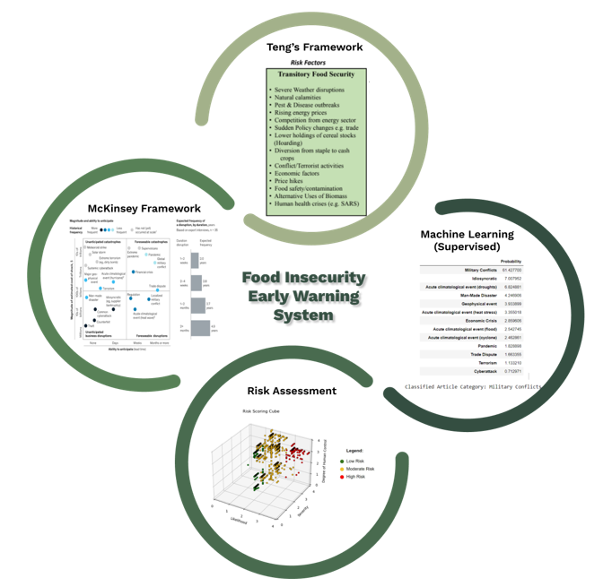
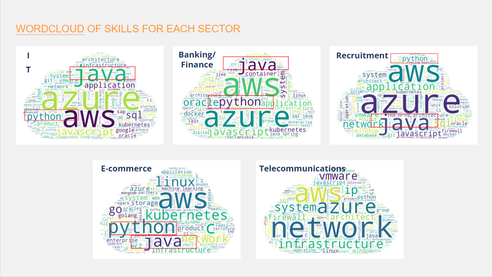
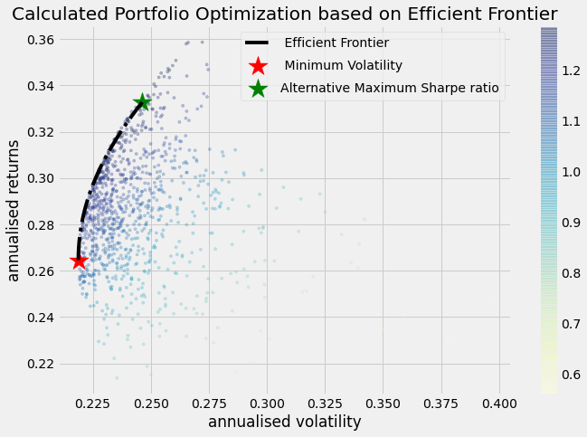
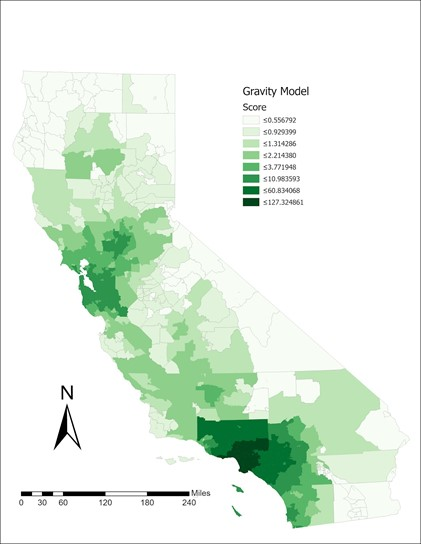
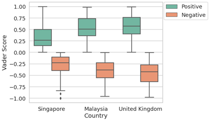
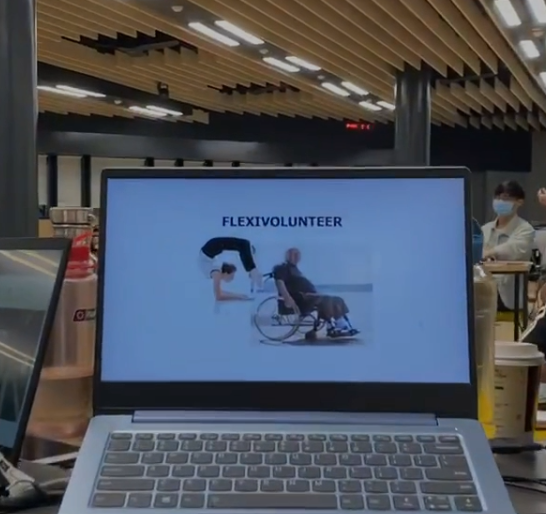

Why Smart Cities?
Cities around the world are growing in size, and the demand
for interdisciplinary knowledge is increasing. It is essential
to have the necessary skills to bridge the gaps between
industries in order to innovate smart-city solutions, that can benefit society in terms of its people, businesses and environment.
Why Business Analytics?
Data is all around us. In this day and age, data is truly ubiquitous and many of us do not actually know how much it affects our daily lives.
Business analytics provides the needed knowledge for companies to survive in today's constantly changing business environment; it also makes room
for growth and improvement, providing a detailed look into various opportunities and challenges that companies face on a day-to-day basis!
Feel free to take a look at some of my projects that I have worked on in school below :)
Enterprise Solution Management using Jira
Module Name: Enterprise Solution Management
This course explores the elements in the IT ecosystem that is required to support enterprise systems.
It is divided into three main areas: maintenance, change and disaster prevention and recovery.
Using common tools in the industry for ticketing, automated testing and DevOps, students are given hands-on experience as well as the understanding for robust delivery, efficient change and deep resilience.
Teams will be given their own system environment to maintain and protect. Real world use cases and examples are given to highlight the importance and complexity of managing applications in the enterprise.
The course is spilt into the following sections:
IT Operations Management
Change Management
Disaster Prevention & Recovery
SingGas - Digital Transformation Analysis and Strategy
Module Name: Digital Business (Technologies and Transformation)

Introduced to the fundamentals of digital business, technologies and the principles and practices that lead to successful digital transformations.
Digital Business (Technologies and Transformation) focuses on digital strategies using 4 components: reimagining the business, re-evaluating value chains, reconnecting with customers and rebuilding the organisation. Other concepts that will be covered include challenges and future directions of digital businesses, tools and API services that can help to implement such solutions, and real-world examples and case studies.
Binomial Options Pricing Calculator Application
Module Name: Computing Technology for Finance

The group project for this module consist of a report to describe the coding fundementals and logic of a Bionomial Options Pricing Model (BOPM), otherwhise known as Cox-Ross-Rubinstein Model(CRRM) in python language and the creation
of a Graphical User Interface (GUI) to improve user experience.
H&M Recommendation System
Module Name: Big Data Architecture

H&M Group is a family of brands and businesses with 53 online markets and approximately 4,850 stores. The online store offers shoppers an extensive selection of products to browse through. But with too many choices, customers might not quickly find what interests them or what they are looking for, and ultimately, they might not make a purchase.
We identified 2 glaring problems in H&M ecommerce business model. Spoilt for choice and return frenzy. Spoilt for choice spoke more about how customers were being bombarded with a large volumn of products, which resulted in them not being able to efficiently find the desired products that had in mind.
Return frenzy on the other hand focused more on how HNM’s lack of proper recommendation system caused plenty of incorrect item recommendations, such as items with wrong cuttings and size.
3 proposed form of recommendations that the team researched and developed in order to improve H&M Recommender Systems:
Collaborative filtering
Content based filtering
Trend based recommendation
Collaborative filtering is based more on user transaction data, recommending products bought by other users of similar purchasing patterns to the target user. Content based fiiltering on the other hand focuses fully on item data, recommending items of similar attributes as the purchased item. Lastly, trend based recommendation is also a cold start recommendation system, where in the home page, customers are by default recommended best seller products per season and user demographic.
Module Name: IS Project Experience

Against the context of the rise of big data in agriculture, food production and distribution and the globally interconnected food trading system, it is no longer practical nor desirable for manual systems to run to manage food supply chain disruptions. With an increasing number of supply chain disruptions, contingency planning and preventive measures can be improved and made “smarter” through the use of early warning systems (EWS), which can provide assessments and notice for active risk management. This can potentially benefit food importers and exporters in particular, as they are the ones who are most heavily involved in moving food supplies around the food ecosystem.
Traditional EWS for food insecurity have generally focused on analysing geographical, meteorological, and market data. However, there are no publicly available Food Insecurity Early Warning Systems (FIEWS) that, using artificial intelligence (AI)/Machine learning (ML) and natural language processing (NLP), consider how both climatic and non-climatic factors can disrupt food supply chains.
As such, our team has innovated and leveraged on Machine Learning (ML) and Natural Language Processing (NLP) to better manage food supply chain disruption risks. We have refined and integrated 2 key existing supply chain frameworks by Professor Paul Teng and McKinsey to create a supervised machine learning model that helps solve a major industry challenge.
ANALYSIS OF CLOUD COMPETENCIES IN THE JOB MARKET
Module Name: Social Analytics (SMUX)

With increasing data volume and adoption of technologies including cloud computing across all industries, the demand for skilled cloud professionals is continuing to increase globally. For Amazon Web Services (AWS) to retain their market share in the industry, they are seeking to analyze trends in jobs requiring cloud knowledge and skills across all other industries, such that they are able to stay ahead of trends and be updated with what companies seek to find in candidates.
As the tech industry evolves quickly, companies need to hire cloud talents and professionals who meet their needs, which results in evolving requirements in candidates. As such, AWS would like to better understand the specific cloud skills and qualifications companies are looking for, such that they are able to help their clients and partners like Deloitte and Accenture hire cloud talents who are a good fit.
They would also like to find out if AWS services are still highly sought among companies, as compared to other cloud platforms such as Google Cloud Platform and Microsoft Azure.
Enviromental, Social and Governance (ESG) ETF Optimization Model
Module Name: Financial Analytics

There are business opportunities that arise, particularly for asset
managers in our case, from evolving investors’ perceptions towards organizations that carefully adopt
Environmental, Social and Governance (ESG) directives. We were tasked to create a interactive dashboard based on financial analytics principles. We explored deeper into the model-building
and fine-tuning phase, highlighting the underlying principles which make up the core of our model for optimisation and
on the rationale and methods of computing output from our input. Once the groundwork is laid, the model is built and
snapshots are included to demonstrate how the model functions and what our client is
able to achieve with the model created.
Topping the Charts: A study on the factors affecting the popularity of Google Play mobile applications using clustering and classification techniques
Module Name: Data Mining

The popularity of 816 mobile applications on Google Play Store are analysed in this study in terms of quantitative statistics and objective figures, as well as qualitative factors drawn from user reviews. A range of 13 classification models were applied to the quantitative figures, and Latent Dirichlet Allocation and K-means clustering methods were applied on user reviews to determine factors that contribute to mobile application popularity.
Reimagining Public Spaces: The future of Singapore's Privately Owned Public Spaces (POPS)
Module Name: Analytics Application for Smart Living (SMUX)

It is often believed that pedestrains in Singapore are used to the high-density urban environment.
However, there is a lack of understanding on the threshold of tolerance levels among different groups of people. We conducted a study on how various
environmental and human factors influence a person's perception on threshold density levels of crowdedness and vibrancy in a POPS or public space
near a waterfront. Through these findings, we aim to generate recommendations for improving user comfort/experience, such that generalisable insights can be
applied to similar areas.
Measuring Healthcare Accessibility
in California using the Gravity Model
Module Name: Geographical Information Systems

Geographical Information Systems (GIS) has developed greatly in recent years, with software like ESRI's ArcGIS improving the analysis and visualisation of data using maps. Although there have been many studies to measure aspatial accessibility to healthcare in America, not much has been done in terms of geographical considerations.
Public Sentiment Analysis
on Lab-Grown Meat
In December 2020, Singapore became the first country in the world to legalise lab-grown meat for commercial use. Since this is quite a novelty, not much research has been done to analyse the public sentiments surrounding this affair.
Measuring the Impact of COVID-19 on
Mental Health in Singapore using the BERT Model
Module Name: Computational Social Science

Singapore is usually ranked amongst the top in the international indexes — from the world’s highest GDP per capita to life expectancy. Singaporeans have all the reasons to be happy. However, Singaporean are the unhappiest in the world with one of the highest rates of depression in Asia.
The already poor mental health state of Singapore is exacerbated by the recent Covid-19 pandemic resulting in a surge in mental health issues since the 2020 Circuit Breaker. This project aimed to assess the emotional well-being of Singaporeans and examine how it has been affected by Covid-19.
FlexiVolunteer
App Design Prototyping
Module Name: Interaction Design and Prototyping

Produced empathy maps and engaged in quick prototyping.
Acquainted with vector graphics editor and prototyping tools to design an app.